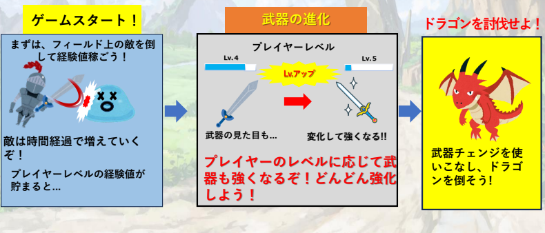

QuestOfKnights

ゲーム概要
王様からの討伐依頼を受けた無名騎士はドラゴンを追う途中、英雄の宝が眠る遺跡を見つける。英雄の武器を手にした主人公は、ドラゴンを討伐し、報酬を手に入れることはできるのか。

6種類の武器があり、進化、購入を繰り返し武器を強化していきながらドラゴン討伐を目指すローグライクです。
苦労した点
今回の制作ではゲームプログラマーは１人しかないのため、毎週プランナーたちと自分が作業するべきことを打ち合わせして制作していました。制作期間中は、「困ってる所があっても、相談できる人がいない」、「作業量が多くて毎回の打ち合わせに間に合わない」という問題点が出てしまいました。それを解決するために自分で「止まらず、他のできる作業を先にする」、「休み時間でも作業を終わらせるために使う」というルールを作りました。
ソースコード